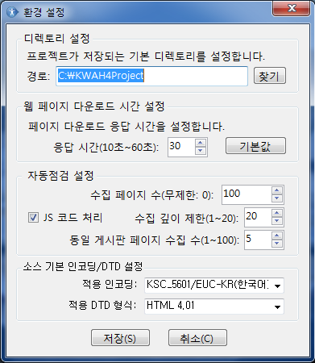

점검 옵션 설정
점검 설정
자동점검 실행에 앞서, 점검을 위한 옵션을 설정합니다.
점검 옵션은 프로그램이 설치될 때 기본값으로 설정되어 있어서 사용자가 별도로 설정을 변경하지 않으면 기본값이 적용됩니다.
또한 사용자가 점검 옵션을 변경하고 저장한 이후부터는 새로운 프로젝트가 생성될 때 변경된 옵션이 적용됩니다.
※ 자동점검 옵션은 K-WAH 4.4 설치 디렉토리의 kwah4option.ini 파일에 저장됩니다.
- 메뉴의 [설정]-[점검 설정 열기]를 선택합니다.
- 아래 그림과 같은 [환경 설정] 창이 열립니다.
- 디렉토리 설정 : 프로젝트가 저장되는 경로
- 웹페이지 다운로드 시간 설정 : 점검할 페이지 소스를 로딩하기 위한 최대 시간 제한
- 값의 범위 : 10~60초
- 기본값 : 30초
- 자동점검 설정
- 수집페이지 수 : 자동점검할 웹 페이지의 수
- 값의 범위 : 1~무한대
- 기본값 : 100 페이지
※ 0은 무한대를 나타내며 웹사이트에 포함된 모든 웹페이지를 점검합니다. - 수집 깊이 제한 : 수집할 웹페이지 URL 경로의 깊이 제한
- 값의 범위 : 1~20
- 기본값 : 20
- 동일 게시판 페이지 수집 수 : 동일 게시판에 속한 웹페이지가 수집되는 수를 제한
- 값의 범위 : 1~10
- 기본값 : 5
- 적용 인코딩 : 인코딩 정보를 제공하지 않는 서비 또는 콘텐츠의 기본 인코딩을 설정
- 인코딩 방법:
- EUC-KR/KSC_5601
- UTF-8
- UTF-16
- 기본값 : EUC_KR
- 적용 DTD 형식: DOCTYPE을 제공하지 않는 웹문서에 적용되는 DTD 형식을 설정
- 값의 범위 :
- HTML4.01
- XHTML1.0/1.1
- HTML5
- 기본값 : HTML4.01
- JS 코드 처리 : JavaScript에 의한 주소 수집 설정

각 설정항목의 의미는 다음과 같습니다.
프로젝트 경로의 기본값은 프로그램 설치 디스크의 KWAH4Project 디렉토리로 프로그램이 설치될 때 자동으로 생성됩니다.
자동점검을 위하여 사용자가 생성한 프로젝트와 관련파일들이 이 경로에 저장됩니다.
프로젝트 새로만들기나 기존 프로젝트의 점검결과 열기를 수행하면 프로젝트 경로가 열립니다.
K-WAH4.4는 웹페이지 점검을 위하여 웹페이지의 소스 코드를 사용자 컴퓨터로 다운로드 받습니다.
웹 서버나 네트워크의 속도에 따라서 웹페이지를 다운로드하는 시간이 서로 다를 수 있습니다.
프로그램의 점검 시간이 과도하게 길어지는 것을 방지하기 위하여 K-WAH4.4에서는 웹페이지 다운로드 시간을 설정할 수 있습니다.
설정한 응답시간을 초과하여도 웹페이지 다운로드를 완료하지 못한 경우에는 다음 페이지를 검사하도록 합니다.
서버나 네트워크 속도가 빠른 환경에서는 응답시간을 짧게 설정하고 반대의 경우에는 응답시간을 길게 설정함으로써 환경에 따른 효율을 높일 수 있습니다.
웹사이트에서 수집하여 점검할 웹페이지의 수를 지정합니다.
홈페이지로부터 몇 단계의 경로 깊이를 지닌 웹페이지까지 수집할 것인가를 지정합니다.
동일 게시판에 포함된 서로 다른 내용의 게시물 페이지를 몇 개까지 수집할 것인가를 지정합니다.
소스 인코딩 방법을 설정합니다. 제공하는 인코딩 설정은 다음과 같습니다.
소스코드에서 DTD 형식을 정의하고 있지 않은 웹문서에 적용되는 기본 DTD 형식을 설정합니다. 적용가능한 DTD 형식은 다음과 같습니다.
'JS 코드 처리'를 체크하면 웹 페이지내의 자바스크립트 웹 주소를 하나씩 확인합니다. 자바스크립트 주소 확인 과정은 웹 페이지를 다운받는 시간이 필요하므로 자바스크립트 주소 확인 갯수에 비례하여 시간이 늘어납니다. 따라서 자바스크립트 주소를 수집하지 않더라도 충분한 주소수집이 가능할 경우에는 'JS 코드 처리' 체크 상자를 언체크로 설정하십시오. 기본값은 '체크'입니다.
페이지 확장자 설정
※ K-WAH4.4에서는 URL 점검시 확장자를 자동 판별하므로 별도의 페이지 확장자 등록 기능을 제공하지 않습니다.